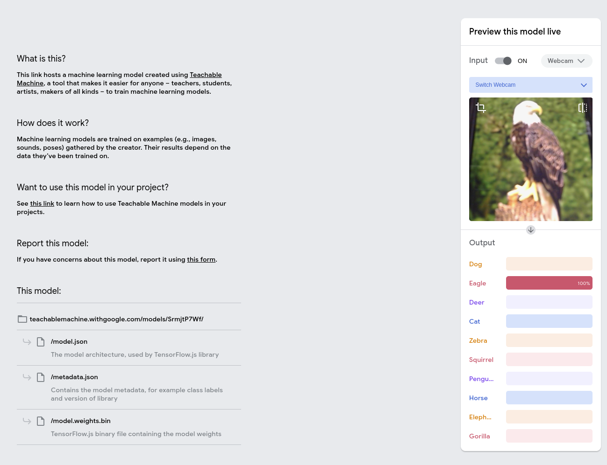
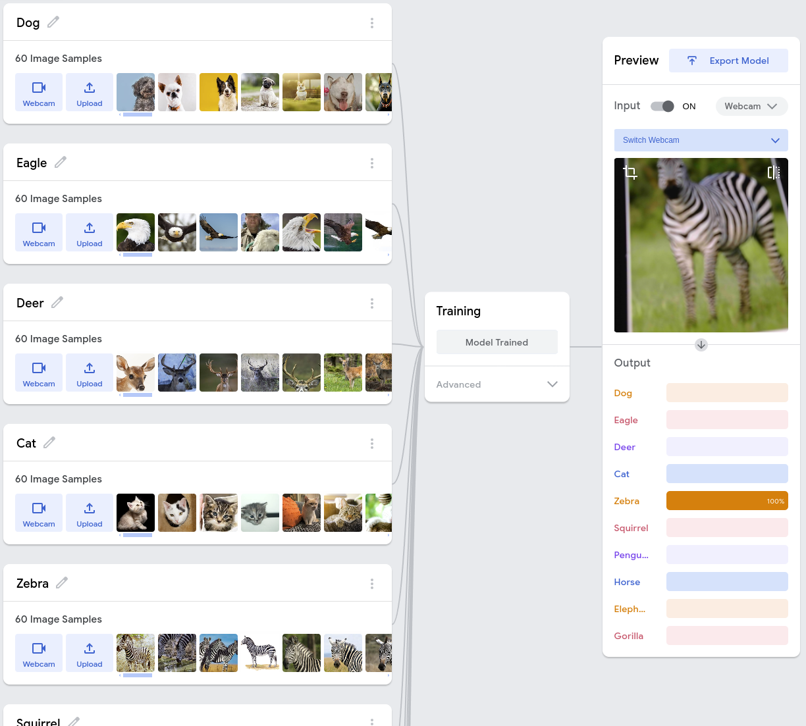

What Is Machine Learning?
Machine learning represents an intersection of data and technology. It allows computers to analyze data, detect patterns, and make decisions without a bunch of programming. By learning from input data, machine learning can help to improve their predictions and readings by adapting to changing environments.
It's important to understand what machine learning is and how it learns from the data that is being input into it because this is also how many of the biases and problems arise.
OUR PROJECT
Problem Statement
The purpose of this project is to create a machine learning model that can identify specific animals that the user has uploaded into the machine. Using Google’s Teachable Machine, we created an AI based classifier that can pick between ten animal categories. The animals that it can pick between are: Dog, Eagle, Deer, Cat, Zebra, Squirrel, Penguin, Horse, Elephant, and Gorilla. The goal of this tool was not only to work, but to also have ethical considerations, caused by Joy Buolamwini’s “Unmasking AI.” We want to not only have a working machine, but we want the machine to represent a fair reflection of the group and not have any biases even though it is harder to reflect these on a smaller simple machine.
Problem Addressed
AI systems often have problems with bias, limited accessibility, and lack of transparency. In our project we aimed to limit these issues by making sure our machine performed reliably across all image inputs.
Technical Overview
Data Gathering: A dataset of animal images was created keeping many of the biases and issues that we learned about in mind. We did this through using proper variety, making sure there were different angles, backgrounds, and lighting.

Key Features
- User Accessibility: A easy to use interface that is very straightforward
- Confidence Scores: The predictions are given a confidence score that helps to ensure how likely the image being input is accurate
Insights from "Unmasking AI"
- As we created this project, Joy Bualoamwini’s “Unmasking AI” provided a an important look into things to keep in mind when using AI.
- Recognizing Bias in Data: Bualamwini talked about how AI systems often have biases from their training data. In order to minimize this we gathered data to overrepresent specific animals and environments
- Designing for Diversity: In the book it often discussed systemic inequalities, so we ensured that our model worked consistently even with carrying inputs.
- Power Dynamics in AI: Bualoamwini talked about how AI systems often reflect the values of their creators, weather or not it was intended by the creator. For our project, simplicity was a strength and also a limitation. It made out machine very simple to create and use, but it also limited the ability to address some of these issues on a deeper level.
- For example: Our choice of animals, even though they were random, could reflect how we are excluding certain representations
- Along with this since the machine is very simple, its doesn't allow for much feedback or collaborative improvement
- Intersectionality in AI: Building on the idea of intersectionality, Bualamwini stressed that AI systems usually don't take into account identities or experiences. In our project, this can be a hardship for the machine to distinguish between animals in a group setting. While the machine still does a good job, it may struggle more deciphering an image where the animals are in a group. This limitation helps to reflect the challenge of designing AI systems that take into account these scenarios.
- Fairness in Algorithms: Unmasking AI argues that fairness should not just be an afterthought in creating AI design. While our machine is a simple demonstration, it required us to think about how even basic models should promote equitable outcomes. For example, within our machine, making sure that our data represents a bunch of animals instead of just two or three. While this is a small example on a simple machine, this is the idea behind creating a fairer and more diverse model.

Reflection and Challenges
- Simplistic Design: While the machine we created was very simple and made for the machine to be easy to use it also helped to highlight many of the limitations and biases that we learned about. Since the design was so simple its hard to combat these challenges.
- Ethical Challenges in Simple Systems: There are many questions that are raised by Buolamwinis work. For example, who decides what data is used? Whose perspectives are prioritized? While we aimed to combat these challenges in our machine as well, it's still a difficult challenge. Its also important to address these challenges in simple projects like ours, just as it would be important to address them in larger-scale projects as well.
- Dataset Limitations: We faced the challenge of making sure out dataset captured a good variety for classification. While creating this it helped to remind us of the bigger implications of biases or incomplete training data.
Broader Implications
This project was a simple way that helped to demonstrate how even basic AI systems can act as mirrors of societal values and assumptions. By reflecting on the lessons from Unmasking AI, we helped to gain a deeper understanding for the importance of ethical design when it comes to creating a machine. Our project also helped us to work on our skills of understanding ethical context and biases when creating a machine. Engaging in these helps us to have a better and more responsible way for AI development in the future.
Watch Our Model!
Watch the video below to see our model in action!
See Our Model!
Click the link below to see our model hosted on Google's Teachable Machine!
Google's Teachable Machine Animal Classification Algorithm
Try Our Model!
Click the link below to try out our model!
Try out our model in real time
Check out our code!
Click the link below to visit our GitHub Repository!
Project GitHub Repository
Conclusion
Our teachable machine project gave us a chance to explore machine learning and also reflect on its ethical dimensions. While our machine is simple and doesn't have advanced features, it helps show the importance of transparency, inclusivity, and fairness in AI. This project allowed us to also get a basic understanding of what exactly machine learning is and how it can help us in a positive way in the future. Since it is a simple and easy tool to use, understanding how to use it properly to ensure there are no biases is also important. Overall using the learnings from Unmasking AI, we aim to use these lessons in our future projects helping to make sure that they are not only functional but also fair.